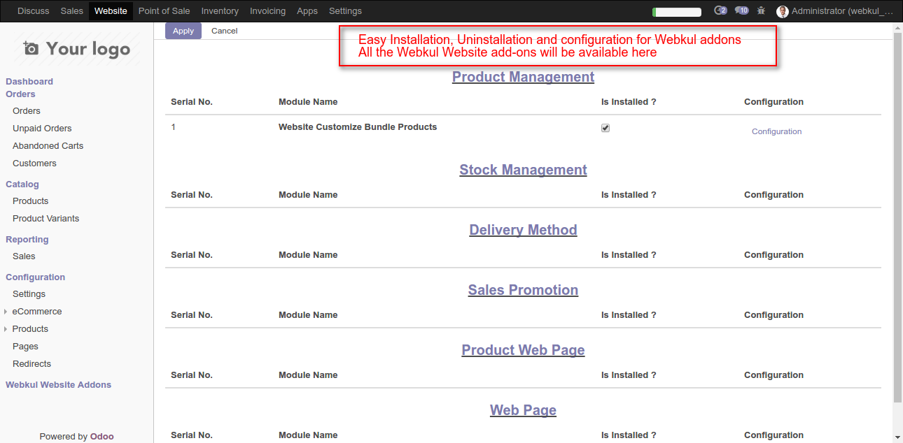

<section class="oe_container">
    <div class="oe_row oe_spaced"> 
        <div class="oe_span12">
            <h3 class="text-info text-center"><u>Introduction</u></h3>
        </div>

        <div class="oe_span12">
            <div class="oe_row_img oe_centered">
               <center></center>
            </div>
        </div>
        <div class='oe_span12'>
            <ul>
                <li >You Can Easily Install, Uninstall and Configure Your Webkul Module From One Page There is No Need to open Many Tab and Settings.</li>
                <li >You Get All Webkul Addons on One Page According to Group.</li>
            </ul>
        </div>    
    </div>
</section>

<section class='oe_container oe_dark'>
    <div class="oe_row oe_spaced">
        <div class="oe_span12">
            <h2 class="oe_slogan">Help and Support</h2>
        </div>
        <div class="oe_slogan oe_spaced">
            
            <span ><a onMouseOver="this.style.color='#AC1EE0'"
   onMouseOut="this.style.color='#7c7bad'" style="color:#7c7bad;" target="_blank" href="https://webkul.com/ticket/open.php">Help</a></span>
            
            <span ><a onMouseOver="this.style.color='#AC1EE0'"
   onMouseOut="this.style.color='#7c7bad'" style="color:#7c7bad;" target="_blank" href="https://webkul.com/ticket/open.php">Support</a></span>
            
            <span ><a onMouseOver="this.style.color='#AC1EE0'"
   onMouseOut="this.style.color='#7c7bad'" style="color:#7c7bad;" target="_blank" href="https://webkul.com/ticket/open.php">Request new Features</a></span>
        </div>
    </div>
</section><section class="oe_container">
    <div class="oe_span12">
        <!-- Piwik Image Tracker-->

<!-- End Piwik -->
    </div>
</section>
	